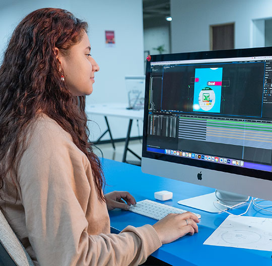
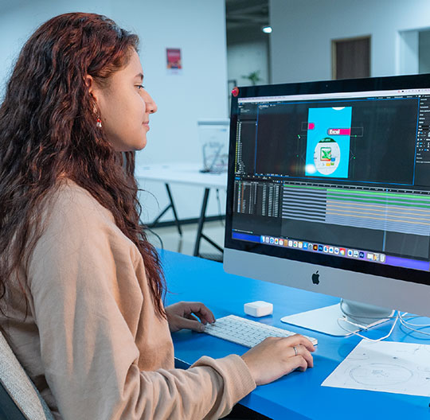

Bienvenido al Sistema de Préstamo de Equipos de Cómputo
Este sistema está diseñado para facilitar el acceso a equipos tecnológicos dentro de la institución CESDE, garantizando un uso responsable y equitativo.
Reglas y Políticas de Préstamo
- Los equipos solo pueden ser prestados y utilizados dentro de las instalaciones de la institución CESDE.
- Solo pueden solicitar préstamos personas activas con vínculo laboral o estudiantil en la institución.
- El préstamo de equipos tiene un límite de 3 horas por solicitud.
- Si el equipo se entrega después del tiempo establecido, el usuario será suspendido por 1 mes después de la tercera infracción.

 
